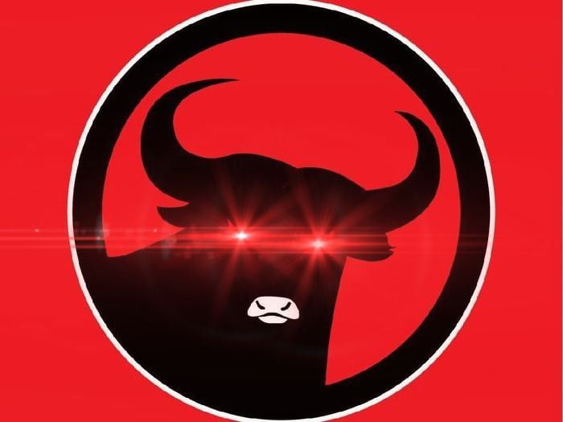

PDI-P dipimpin oleh Megawati Sukarnoputri, putri dari Presiden pendiri Indonesia Sukarno, sejak tahun 1999. Ia menjabat sebagai presiden negara tersebut dari tahun 2001 hingga 2004. Partai ini telah menjadi bagian dari koalisi pemerintahan di Indonesia sejak tahun 2014, dan saat ini memegang jumlah kursi terbanyak di parlemen Indonesia.
Megawati lahir pada tanggal 23 Januari 1947 di Yogyakarta.Pada tahun 1993, Megawati terpilih sebagai Ketua Umum PDI setelah tiga kongres partai yang kontroversial. Namun, pada tahun 1996, ia dipecat dari jabatannya oleh Soerjadi, yang saat itu menjabat sebagai Ketua PDI.
Puan Maharani lahir pada tanggal 6 Maret 1973 di Solo, Jawa Tengah. Ia merupakan putri dari Megawati Sukarnoputri, Ketua Umum PDI-P dan mantan Presiden Indonesia.Puan Maharani telah aktif di dalam partai politik sejak masih muda dan sekarang menjabat sebagai ketua DPR RI.
Jokowi adalah singkatan dari Joko Widodo, yang saat ini menjabat sebagai Presiden Indonesia. Ia lahir pada tanggal 21 Juni 1961 di Surakarta, Jawa Tengah. Sebelum terjun ke dunia politik, Jokowi adalah seorang pengusaha mebel dan sekarang menjabat PRESIDEN REPUBLIK INDONESIA 2 PERIODE .
Sebagai partai politik, PDI-P memiliki platform politik yang berfokus pada nasionalisme, demokrasi, kesejahteraan sosial, dan keadilan. Partai ini juga menekankan pentingnya penguatan ekonomi nasional, pengembangan sumber daya manusia, dan perlindungan lingkungan hidup. PDI-P juga memiliki beberapa tokoh yang cukup terkenal di Indonesia, seperti Megawati Sukarnoputri, Joko Widodo, Puan Maharani, dan beberapa lainnya.
Partai Demokrasi Indonesia Perjuangan (PDI-P) adalah partai politik yang berbasis di Indonesia dan didirikan pada 10 Januari 1999. PDI-P merupakan salah satu partai politik terbesar di Indonesia dan memiliki sejarah yang panjang dalam perjuangan demokrasi di Indonesia. Sejarah PDI-P dimulai dari partai politik PDI (Partai Demokrasi Indonesia) yang didirikan pada tahun 1973. Dan terjadi perpecahan tahun 27 juli 1996
312110177